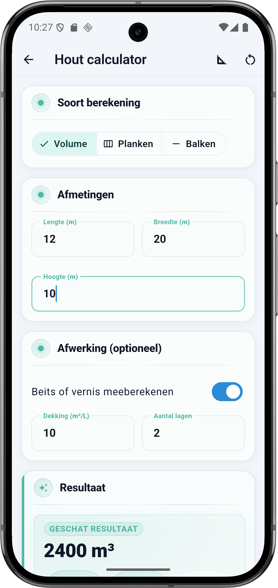
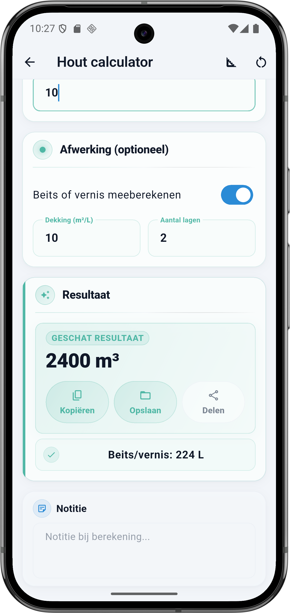

Wat vraagt de calculator
De Hout calculator heeft drie modes die je bovenaan kiest: Volume, Planken of Balken. Daarna krijg je een Afmetingen-blok dat per mode andere velden toont, en een optioneel Afwerking-blok voor beits of vernis.
Soort berekening
- Volume — voor een stuk hout waarvan je het volume in m³ wil weten. Simpelste berekening: lengte × breedte × hoogte. Werkt ook voor een houtvoorraad, een balk of een gevelbekleding als geheel.
- Planken — reken aantal planken uit op basis van plankafmetingen en te bekleden oppervlakte. Handig voor gevelbekleding, vloer, lambrisering of beschoeiing.
- Balken — reken totaal aantal balken en volume uit op basis van balk-doorsnede en lengte. Handig voor een balkenlaag, dakconstructie of houten frame.
Afmetingen
De velden hangen af van de gekozen mode. Dit is wat je ziet per mode:
Volume mode
- Lengte (m) — langste zijde.
- Breedte (m) — middelste zijde.
- Hoogte (m) — kortste zijde (of dikte).
Planken mode
- Lengte plank (m), breedte (cm), dikte (mm) — afmetingen van één plank.
- Te bekleden oppervlakte (m²) — de totale wand- of vloeroppervlakte.
- Snijverlies (%) — standaard 10%, meer bij een onregelmatige vorm.
Balken mode
- Lengte balk (m), breedte (mm), hoogte (mm) — afmetingen van één balk.
- Aantal balken OF hart-op-hart afstand (cm) + totale lengte constructie — kies wat voor jouw project het makkelijkst invullen is.
Afwerking (optioneel)
- Beits of vernis meeberekenen — zet aan voor een onbehandelde houtsoort die je wil beschermen. De calculator rekent op basis van buitenoppervlak hoeveel liter je nodig hebt.
- Dekking (m²/L) — staat op het blik. Vuistregels: beits 8 tot 12, vernis 10 tot 14, hout-olie 15 tot 20, verf op hout 10 tot 12 m² per liter.
- Aantal lagen — standaard 2. Voor doorlopende blootstelling (gevel, buitenterras): 3 lagen. Binnenshuis: 1 of 2.
💡 Welk afwerkingsmiddel?
Beits dringt in het hout en behoudt de nerf — goed voor rustieke gevelbekleding of een houten vlonder. Vernis vormt een filmlaag erop — glad resultaat voor meubels of binnenwerk. Hout-olie geeft natuurlijke bescherming die matcht met de houtsoort — vooral voor hardhout (teak, bangkirai). Alles vraagt onderhoud elke 2 tot 4 jaar bij buitentoepassing.
De formule onder de motorkap
In Volume mode is het simpel: L × B × H. Beits en vernis rekenen op buitenoppervlak van het volume — alle zes zijden samen.
Rekenvoorbeeld — Volume mode met beits
Dit is de situatie uit de screenshot: Volume mode, L × B × H = 12 × 20 × 10 m, afwerking met beits op 10 m² per liter, 2 lagen. Dit is een grote testcase om de verhouding tussen volume en afwerking te laten zien.
Invoer
| Veld | Waarde |
|---|---|
| Soort berekening | Volume |
| Lengte | 12 m |
| Breedte | 20 m |
| Hoogte | 10 m |
| Afwerking | Beits of vernis |
| Dekking | 10 m²/L |
| Aantal lagen | 2 |
Berekening stap voor stap
- Volume: 12 × 20 × 10 = 2400 m³
- Buitenoppervlak: 2 × (12×20 + 12×10 + 20×10) = 2 × 560 = 1120 m²
- Totaal te behandelen oppervlak: 1120 × 2 lagen = 2240 m²
- Liters beits: 2240 ÷ 10 m²/L = 224 L
Resultaat
| Onderdeel | Waarde |
|---|---|
| Volume | 2400 m³ |
| Beits of vernis | 224 L |
💡 Schaal van je project
De screenshot gebruikt gigantische afmetingen (2400 m³ is een gebouw, niet een stuk hout) om het effect te laten zien. Realistisch: een houten balk van 4 × 0,20 × 0,10 m is 0,08 m³. Een gevelbekleding van 50 × 2,5 m dik 2 cm is 2,5 m³. Een houtvoorraad van 2 kuub voor renovatie is in de praktijk je bovengrens.
Dekking per afwerkingsmiddel
Afwerkingsmiddel beïnvloedt direct hoeveel liter je nodig hebt. Vuistregels:
| Afwerking | Dekking (m²/L) | Wanneer kiezen |
|---|---|---|
| Beits (transparant) | 8 – 12 | Rustieke uitstraling, nerf blijft zichtbaar |
| Vernis | 10 – 14 | Glad filmresultaat voor meubels of binnenwerk |
| Hout-olie | 15 – 20 | Hardhout (teak, bangkirai), natuurlijke bescherming |
| Dekkende houtverf | 10 – 12 | Als je nerf niet wil zien, mooi strak kleur-eindresultaat |
Zo doe je dit in BuildExact
- Open de Hout calculator onder Materialen. Kies boven in Volume, Planken of Balken.
- Vul afmetingen in volgens de gekozen mode. Volume: L × B × H in m. Planken: plankafmetingen plus te bekleden oppervlak. Balken: balkdoorsnede plus aantal.
- Afwerking optioneel aan — vul dekking (lees het blik) en aantal lagen in. 2 lagen is standaard, 3 voor buiten.
- Resultaat lezen: volume in m³ of aantal stuks, en liters beits of vernis als afwerking aan staat.
- Bewaar als project of deel vanuit de resultaatkaart — koppel het aan een offerte-PDF voor klanten.
Veelgestelde vragen
🪵 Reken je hout in BuildExact
Gratis in de app. Reken, bewaar als project, zet om in een offerte-PDF met je logo — allemaal zonder opnieuw te typen.
Gratis downloaden